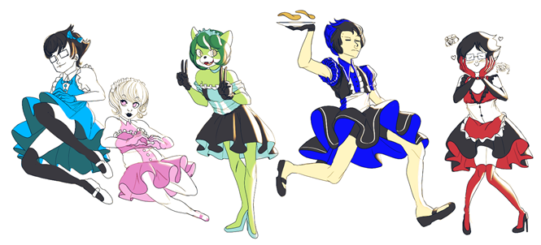
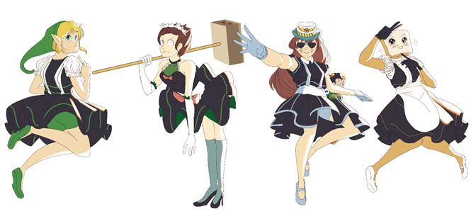
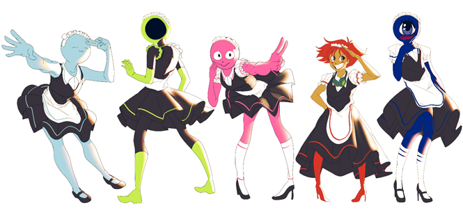
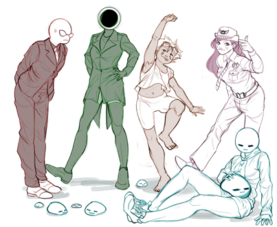

1st of February
Today was devoid of all but one development, which I’ll describe shortly. In the meantime, some more descriptions of people are warranted: Neth is a nice fellow, with the HSD being the first online community they’ve ever actively participated in. They mention never having made “any significant contribution” to the community, which is something that I feel bothers them in at least a small way. They describe having joined the HSD with the initial intent of being a shitter, but only a couple of days after joining they changed their attitude and began participating in earnest.
Before #social was created, they hung out almost exclusively in #general with other regulars like Angel, Starkuss, and a few others. Then they became a socialite and started hanging out there instead. Eventually the drama concerning Twonks and Socialer happened, and Neth found themselves devoting a huge chunk of their time to the splinter server. For a few months they didn’t participate in the HSD at all, but grew concerned about this place and came back. At this point though, #general and #social were both somewhat barren and they decided to begin speaking in mspa-lit.
Neth enjoys art and music, and especially likes to sing. They seem fairly reserved, describing their singing ability as “mediocre”, and admitted to not being sure why I felt like including them in the journal. At this point I’m not strictly sure how they feel about their own position in the community; they participate a lot, having tens of thousands of messages, but the overall impression I’ve gotten is that they try to be unassuming and avoid drawing overt attention to themselves. Despite this perception (which I must disclaim may be inaccurate), they often have interesting or related tidbits to contribute to a whole range of conversational topics.
Null is another individual that fits this mold; they seem reserved about their contributions and their past. They’ve stated that they essentially burned through all of Homestuck and then found their way to the HSD a year ago, latching onto mspa-lit by whatever circumstance. After a glance at their posting history, it seems as if over half of their total messages are indeed in mspa-lit, but they have a healthy smattering of posts in other channels as well. Finally they appear to be largely non-serious, openly making fun of people like WoC when the opportunity arises
WHATISLOSTINTHEMINES, or simply Mines, is a very well-established member of our community, participating across a wide range of related servers for quite some time now. They’re especially known for their fanmusic on the LOFAM server, and I’ve already described their highly controversial and cursed Vore album and the in-progress Feet album. They’ve also been a participant in places like Movie Night. It’s honestly impressive to consider the breadth of their participation in our general community.
Mines is self-described as a “long suffering prequel fan”, Prequel being another webcomic. They’re a really lighthearted individual, joking along with other people and posting silly memes frequently. They of course have meaningful contributions to most conversations, but can often be seen submitting less than serious responses to things as well.
In fact, today when I was publically musing over writing about people, they joked about nagging me to put them in this journal as well (which, the joking inspired the other two people I’ve written about today to mock me about their being included; the joke is on you guys, I write about who I want). However, their inclusion was inevitable—I have always wanted to include them in the journal because their effect on the community at large is undeniable, and they’ve proven to be a good friend. Mines’ presence never fails to improve things.
The major event worthy of note today is that Revlar has come back to the community. Tipsy, Griever and I were talking in #eastern-media about Dragonball, as we are wont to do. Out of basically nowhere, Revlar began commenting on the topic as well, which caught me off guard. I almost had to laugh: it’s been a year since he left, but without another word Revlar saw fit to return and resume discussion like nothing happened. It seems almost fitting from what I remember of him.
He felt it necessary to assert that his return has nothing to do with a gradually increasing sense of humanity that compelled him to return, but rather that someone from here PM’d him and that somehow1 precipitated into him coming back. From this, it seems his dry sense of humor seems to have remained as strong as it was before he left, and the conversation going on in mspa-lit with him even feels like it did so long ago. It’s remarkable how pronounced the effect on the channel mood is, how noticeable it can be. I’m interested to see if he’ll actually stay for a considerable length of time or not. With the parts of the server that aggravated him before now gone, perhaps he will.
Nothing more for today.
2nd of February
More descriptions for today. First is Interrobang, a decidedly modest member of the chat. They describe reading Homestuck initially as a bet back in 2014, after which they hung out on the subreddit for some time and mostly lurked. Apparently they joined CANMT first and then ended up joining the HSD. Apropos for someone who joined CANMT first, they have contributed a swath of fanmusic to both CANMT and then run some side projects on LOFAM as well.
Interrobang first joined the HSD in about July of 2016, making them more familiar with the lay of the land than I am. Despite having a clear bent towards music they admit to staying almost exclusively within mspa-lit, which is understandable in a way. Regardless, they do visit other channels on occasion and are fond of a wide variety of subjects, especially reading, math, physics, and even astronomy.
Personality-wise, they seem fairly personable; friendly but not overly so, they have a marked penchant for shitposting, actually succeeding in being banned from #general at least once. It’s not at all uncommon for Interro to step in with a joke to accompany any given conversation, although this does not preclude the chance of them contributing in a more meaningful or constructive fashion on occasion.
Next is Saeko. They began reading Homestuck at some point in September of 2015; they describe searching for a Homestuck related Discord server like ours, but were initially unable to find one, only finding out about us a bit after finishing reading the comic itself. Once they found their way here, they hung out primarily in the #nsfw channel when it was still around, although now that it’s gone and its culture is all but erased they’ve taken to hanging out in mspa-lit.
I’ve actually mentioned Saeko on a previous occasion, when they were banned for joking about being underaged in spite of new rules saying that all such jokes would be taken seriously. This whole debacle essentially mounted to a huge waste of time, and its origin should give the reader a not-insignificant idea of what Saeko is like. It is thus that Saeko conducts themselves on the server: at any given time they are almost certainly shitposting, the intensity of which will vary depending on the day. Counterintuitive to this, Saeko was fond of spending time in #serious for legitimate conversational use, at least, “before it turned into a drama channel”.
Of all of their interests, shitposting does indeed seem to be the most obvious even just from associating with him in passing. Their presence in a given conversation is typically erratic and festooned with a large quantity of verbal shittery, but it’s never so overt that it’s genuinely troublesome. In fact, I would go so far as to say the opposite; their cadence of speech lends itself to something particularly interesting. Their eagerness to contribute in serious conversations creates this extreme juxtaposition with their more pronounced japery, so that it’s never clear which Saeko you might be talking to in a given conversation.
Trickster, on the other hand, is a different beast. I don’t know where he came from or what his history with Homestuck is. All I do know is that he is a bizarre human being, if that is indeed what he is. He is less like a person and more like a hurricane, in that he is a force of nature. Inexorable in his machinations, Trickster lurks every conversation, waiting for the perfect moment to strike. There is never any doubt that such a moment will arise; his mere presence assures that destruction is sure to follow.
All of this is to say that Trickster is a fucking weirdo. I honestly don’t get what his deal is; he has always had a reputation for being this way, although it never really bothered any of us before. It was just a given that Trickster was a rather shitposty individual. However, at some point in the recent past Trickster read the book Principia Discordia, a “parody religious text” espousing principles of chaos and unreliability. After this, it seemed as if he kicked into overdrive.
Now Trickster is basically unstoppable. Every single conversation he’s around for, he manages to make a profoundly absurd comment that forces everyone present to stop and witness him. It’s stunning both in the capacity of the comments he makes and how frequently he manages to do it. However, it has also earned him a bit of infamy as well: now that people expect this kind of behavior from him, it has ceased being purely amusing and is now an object of some frustration.
His more bizarre comments more often elicit comments of agitation than anything else, and I’ve personally threatened to ban him on occasion when his behavior is especially egregious. I don’t know how much of what he does is a shtick he plays up for fun and how much of it is genuine. Regardless of the reason why he does it, the general idea is that it is maddening to see play out. This all contributes towards Trickster being one of the more bewildering people to associate with on the server.
Nothing more for today.
3rd of February
A few more descriptions today: beginning with Dap. Their involvement on mspa-lit is indisputable, but despite this it feels like I miss the various opportunities to talk to Dap extensively. They joined the HSD in about August of 2016, citing a lack of Homestuck content on Tumblr as the reason for them to seek out a Discord server. After joining here they lurked for about a month, started hanging out in #general, and then made their way down to mspa-lit with the rest of us goons.
With a wide variety of interests across gaming, reading, writing, art, and assuredly others, Dap joins the sizeable group of people who exhibit a pretty generalized knowledge of things that allows them to comment on just about anything with some degree of meaningfulness. Also in a similar vein as a lot of other users, they are fond of making jokes and shitposting. This sort of personality archetype seems to be pretty common in the kind of people who hang out in mspa-lit, by my reckoning. Not entirely sure why it’s such a typical mindset to have for people here, but it does lead to some pretty interesting conversational patterns.
Cloudaria is an interesting member, having been on the HSD longer than most other people. She joined very early in 2016, back when it was still based largely around the game Overseer; at this point she was briefly modded, but due to inactivity was subsequently unmodded when it was rebranded to focus specifically on Homestuck. She also mentions that she read Homestuck “at the request of people on a minecraft server and then promptly went to shitpost about it”, which makes me laugh; it’s interesting to consider all of the various ways in which people may be clued into the existence of the story.
Cloud seems to have their fingers in a number of different pies, community wise. While she spends plenty of time shitposting in mspa-lit and around the HSD in general, she also joined CANMT, where it says she contributes as a voice actor. In addition to this, on the occasions that I’ve been there I’ve seen her be very active in Austinado’s server dedicated to the Vast Error fanventure team. I’m not sure if she contributes to Vast Error, but usually by the time someone has entered that niche of a community it indicates a general level of involvement that exceeds the average casual reader anyway.
Wave, short for SQUAREWAVE, is another interesting character. They got into Homestuck around 2014, some time after it had hit its apparent climax and was on the decline. Not caring too much for the story itself, Wave got heavily into cosplay and began dressing as the characters for meetups. After experiencing some intense drama that I will neglect to write down here, Wave felt it necessary to take a break from the Homestuck fandom in an effort to regain their grasp on things, to put it lightly.
Sometime after Undertale came out, Wave decided to try again and posted some cosplay photos on the subreddit; these were received favorably. Shortly afterward CANMT began looking for people to make music for Cool and New Webcomic, to which Wave created a truly fitting, ungodly meme song. Since then they’ve been sporadic in their participation for CANMT, but then they joined the HSD.
Wave’s personality is not unlike Saeko’s; both are fond of shitposting, but just as commonly they can be found discussing things in earnest, at least in serious conversations. I think Wave is more predisposed to joking around and enjoying themselves at the expense of the conversation though. One particular anecdote that Wave is fond of telling involves being at a convention: to make a long story short, an encounter with another cosplayer ended in a blowjob. They’ve told this story a few times, and it never fails to catch at least one person off guard, although it no longer fazes me.
Wave is dedicated to being as wacky zany as possible, except in #serious. Even when they appear otherwise, there is an almost certain chance that they trying to steer conversations; they function as some sort of self-described shitposting mastermind, “dropping a topic in and letting the conversation run [its] course, dropping in jokes I've planned for like the Count Basie of shitposting”. Some time ago, he played the piano in voice chat on occasion.
Sometimes it strikes me just strange and diverse our community is in personalities alone. It truly makes for a chaotic and refreshing blend of discussion, with almost every day being something different. There are only a few more people to describe at this point, which I will do another time. For now, it is important to describe the main event of the day: Carlarc has officially come back.
This event was marked with a really heavy flurry of people expressing their gratitude that he returned. I was glad to see this and have the chance to participate myself; Carlarc is widely considered a shitposter in some ways, but their presence is valued pretty highly as someone who generates activity and is actually nice to speak with. Carlarc didn’t explain why they left besides something personal and “general disinterest” in the place, and I’m a bit concerned that this may happen in the future. Nonetheless, I am very glad that we got him back; everytime someone leaves it leads to a strange and wholly unpleasant feeling of missing something important, affecting the tone of conversation and the mood of the channel in very subtle, often imperceptible ways. Here’s to hoping that such will not be a problem again, at least not for as long as possible.
Looking back, it seems apparent that some of these descriptions have less in them than others, but I would like to point out that this is not indicative of overall value of each person involved: all of the people mentioned speak commonly enough in mspa-lit and other places on the server that they warrant some attention—it’s simply that some of them are more straightforward to explain than others. Or, more likely, I have missed some overall details that would contribute heavily to their descriptions. Whatever the case, I’m grateful to all of them for being around and participating as often as they do. I hope that my gratitude shows, and that they will feel warmly welcomed in the HSD for as long as they care to be there.
Nothing more for today.
7th of February
In the aftermath of yesterday, a sort of exhaustion has seeped in. It’s likely a combination of many factors, including some real life circumstances in play, but I think I may have overextended myself with the article. I’ve reread it a few times now and I keep getting this feeling of general displeasure without really being able to put my finger on why. Further, the response to it—while generally positive—has been pretty muted. It’s received less attention than the Gankro article did at the same point, so I’m worried that people just don’t care as much. I guess the information is out there if anyone so chooses to look at it, which was the main goal. Still wish that the visibility was higher so more people could read it. Is that a selfish desire or not? You be the judge.
In the face of writing and releasing the article yesterday, I neglected to mention a pretty neat event that occurred yesterday. SpaceX is a private company in the business of making rockets. To keep a long story short, the company tested new rocket engines called the Falcon Heavy yesterday, and were aiming to put a rather interesting payload into space.
I had to offer this explanation numerous times over the last few days so it’s fairly well practiced by now: new rocket engines are extremely prone to failure, so in order to simulate the weight of a payload it is standard procedure to launch an inexpensive item like a block of steel or concrete to mock the weight of a satellite. The owner of SpaceX, Elon Musk, decided to send up a car made by his automotive company Tesla. As if this weren’t enough, a mannequin wearing a SpaceX space suit—affectionally called Starman—is “driving”, and the car has a litany of science fiction or otherwise space-related pop culture elements packed into it, such as it being wired to play David Bowie music, as well as a copy of Douglas Adams’ The Hitchhiker’s Guide to the Galaxy and a towel in the glove compartment (I’m sure other references I’m not aware of are there).
In as simple of terms as I can manage, this launch was the wetdream of nerds2 everywhere. It had a high chance for failure, and yet by the tone of my words I’m sure any reading this may surmise that the launch was a success. Makin set up a stream for people to watch the launch happen live, and about 30 to 40 of us all got together to see it in real time. There were a few memes I missed, but I was present for two main events: the booster rockets successfully detaching and landing back on Earth, and then the car being revealed in space.
It’s important to mention that a hefty number of us are really into space exploration. Some of us just find it cool, and others, like myself and Makin, think it’s an important tool going forward as a species. We think it’s genuinely important for the survival of humanity, and that if we are ever to ensure our success and proliferation that we must be able to colonize other places, for a huge variety of reasons. Because of this, a sizeable portion of our group becomes fairly excited over new developments in space technology.
With this in mind, it’s easy to understand that this stream was a pretty big deal. Not only is it a monumental step forward for SpaceX as a space-related company, but the plethora of nerdy bullshit associated with it is enough to tickle even the most modest of dorks. Also important was the boosters: SpaceX has made it a regular occurrence to land their boosters, a feat that had never been accomplished before 2016, but to my knowledge this was the first time they were attempting to land two boosters at the same time.
The test was, as I mentioned, a success: the test payload with the car was launched into space as planned, and the two side rockets landed back on their pads in a way that suggested effortlessness, despite the assuredly countless man-hours spent perfecting the systems involved as much as possible. Seeing both of them land simultaneously was nothing short of a spectator sport: all of us watching very literally cheered as it happened, to celebrate the monumental strides that have been achieved in rocket tech in the last few years alone.
The other half of all this, the car, was its own event. Once it was outside of the Earth’s atmosphere, the capsule containing the car split and revealed its payload. With Starman in all of his glory, the car was perched atop another rocket engine to take it out of orbit of the Earth; as it was revealed, the stream began playing David Bowie’s Life on Mars?, and everyone in the stream watched with awe as the camera revealed our entire planet, slowly spinning in and out of view beneath Starman. This was something to consider: by all means an absurdity, with a dummy riding a car into space, and yet it spoke to us at that moment. It’s difficult to describe perfectly, but it felt like the perfect encapsulation of the most distant hopes and dreams of everyone watching.
I could go on for quite some time about this, and arguably I have spent more time on it than I should already. It is enough to say that everyone present for this stream felt connected by a common thread: a desire to see humanity go as far as it possibly can, and be the best it can possibly be. Starman’s course will take him out to the approximate orbit of Mars, where he will enter a path around the sun for possibly millions of years. There is no real human in that spacesuit, and yet he looks comfortable out there careening into the infinite depths of space at thousands of kilometers per hour. I think I speak for all of us who were watching when I say that we wish him the greatest of journeys, and that we may all have the chance to join him within our lifetime. Goodbye for now, Starman.
Returning to the comparatively mundane affairs of the HSD, there is one thing that happened today worthy of note. A user named Mayyro had his account hacked and started spamming Google links with malware to random people. I was notified of this by $trider, and without too much thought banned Mayyro’s account so it could not send the links to anyone else.
Cut to later today, and Mayyro was asking about the ban on the subreddit. I promised I would look into it, and I did: I brought up the alleged hacking in the modchat. There were three main possibilities to be considered: the first is that Mayyro was lying about being hacked and sending malware to people for fun, which is distinctly unlikely; the second is that Mayyro was hacked through his own negligence, stupidly clicking on strange links and running programs that compromised his Discord account, which seems mostly likely; and the final idea, which is that Mayyro’s account was hacked through no fault of his own. This last seemed the most unlikely, as Discord is fairly security conscious.
Despite this, I felt obligated to respond to Mayyro’s request for help. I didn’t exactly have all the facts, and if he was able to demonstrably prove that the account was hacked through no real action on his part then he would be in the realm of plausible deniability. At that point I would have asked him to turn two-factor authentication on and call it a day.
As it is, he was unable to prove distinct proof that he was not directly at fault for his account being hacked. After discussing this with the other mods, the decision to ban him was sustained because his stupidity could endanger others on the server, and we were no longer able to trust him. There were also other circumstances that played into this decision—Mayyro being somewhat of a problem user at various points in the past—but the breach in trust was by far the biggest one.
Mayyro was not pleased to hear this, naturally. It was already far into the night when I began conversing with him, so more and more I found myself unwilling to deal with his diatribes at being treated less than perfectly. I think that I’m becoming more jaded the longer I do this, which is not what I want to happen at all; I tried my best to remain respectful, but sometimes you get a user like Mayyro and it makes you want to flog yourself raw with your brainstem from agitation alone.
I’m sure that responding negatively to him will have some sort of adverse impact in the future, but I’ll be damned if I can tell what it is right now. I was initially afraid that saying no would contribute to Mayyro becoming some kind of NEO clone, but Toast is less concerned: “mayyro isnt a neo type hes just an idiot”. With other mods Nat, WoC, Olki, and Rar all chiming in to say that they do not support him coming back, it seemed safe enough to dismiss Mayyro.
I don’t want to elaborate on the discussion further. It was fairly unpleasant, not really something I can look forward to. Banning people is always either disappointing or annoying as fuck. I still feel like it was important to pursue this even though Mayyro is no one special in our server by any means; Toast and WoC both felt right from the start that it was a pointless waste of time, but I like to think I’m more principled than them when it comes to stuff like this. This is perhaps to a fault, but what can I say? I want to do as great a job as I can.
Nothing more for today.
8th of February
Something else I failed to mention (my attentiveness is getting worse apparently) is that MSPFA has been down in varying degrees over the last few weeks. At first, the entire site was down and no one could even see fanventures, which is obviously alarming. Shortly this was fixed so that everyone could read them again, but then no one was able to update their stories. To my knowledge, this is where the website is for now, with all fanventures at a standstill. Some people are still unable to view the website even, which might be a geographical thing (or more likely browser related, but I’m not perfectly sure).
This has brought some additional attention to MSPFA, as people are suitably frustrated with being unable to edit their adventures. Griever and Nights I believe are both creating material even despite this setback, which could serve as a sort of backlog and give them some leeway once MSPFA is back online. Until then, I’m sure all the other authors involved are doing something similar. From this, it’s apparent that Miro is under a lot of pressure to get the website back up and running.
After doing some digging, it appears that the website is down due to a completely foreseeable problem involving the structuring of the website. I’ll forego any technical details, but Makin claims he talked with Miro about this in the past, and the latter claimed that there would be no problems. Cut to today, and clearly we can see this was not the case. General disappointment abounds, and as of today the website has been online but broken for 20 days.
Aside from this, interesting discussion today: I’ve mentioned previously that every Wednesday features something from What Pumpkin called the “Troll Call”, where they briefly introduce two new characters who will feature in the next act of Hiveswap. The character is shown and then three bullet points of their personality, often joking in some way, accompany the portrait. This has been a regular occurrence every week for a few months now.
In this way Wednesday passed as usual, with the new characters dropping as expected. However, this week in particular there was something that made it a little controversial. The new characters, of a species simply called “trolls”, have generally all been stereotypes of some kind, relatively unworthy of note. However, with this latest release, one character’s bullet points simply said that they were “troll jewish”.
This was initially met with only minor comment, some people calling the point tasteless on Wednesday, but otherwise leaving it alone. I thought that any backlash against WP for this would be immediate, but apparently I was wrong. Today there was a whole slew of comments calling WP out. Various members of WP, including Cohen himself, tried to variously downplay or ignore these comments, with limited success.
To be honest, I’m ambivalent on the matter. While it was almost certainly in poor taste, I don’t think the joke requires that much attention. Yet, there are posts on tumblr decrying the use of the term. I haven’t seen anyone say much on the topic that wasn’t immediately understood, but the fact that there is outcry at all is something to behold. As it is though, the nature of this incident is such that it’ll almost certainly be forgotten by next week’s Troll Call.
Finally, there was an entry recently after The Rapture where I mentioned I talked with Makin in the mod chat about his behavior, and he responded, “I don’t know” when I asked why he does the things he does. After reviewing that entry himself, he claimed3 that he was only saying that to get me to leave him alone. While not exactly surprisingly, it is definitely just another layer of disappointment to stack onto the whole affair. I would call this behavior surreptitious and say that I’m not sure what must go through his mind when he says things like that, but I’m rapidly being pushed towards the conclusion that he doesn’t actually care that much. Perhaps that was obvious to everyone except me; regardless, it is still annoying to contemplate. Not much else to be said about it at this point in time.
Nothing more for today.
9th of February
No events of note happened today. Instead, more people descriptions.
I actually promised Gitaxian I would be writing about him some time ago, and then forgot to do so in the midst of the Rapture. Whoops! I swear it was unintentional, and that Gitaxian is not actually a forgettable person. They’re actually pretty cool, and he’s contributing to part of this journal. I mentioned this at some point in the past, but he’s responsible for the “What is a quest?” document in appendix A, which he updates every so often.
Gitaxian first heard of Homestuck back in 2013 and hung around on the forums for some time. Eventually the forums went down, at which point he stopped participating in the community. With the release of Hiveswap being chronically delayed at the time, Gitaxian eventually found his way onto the HSD in March of 2017.
He mentions witnessing “one of Makin’s bigger fuckups” here (which he didn’t elaborate on4), giving him a negative impression right off the bat. This convinced him to stay away for a while, although he would peek back occasionally. Finally, he actually came back in full after hearing the Makin was advertising Worm to everybody on the server, which Gitaxian had already read. Following this he read through another of the works Makin was shilling and then began participating here in earnest. Gitaxian isn’t the most active user, but he seems to talk a little bit in almost every channel. While it seems as if he’s fond of casually shitposting when he can, he also submits pretty useful commentary alongside everyone else.
Dap is a fairly typical personality here. With about half of their total messages being sent in mspa-lit, they seem to be pretty much always present to discuss all manner of topics, and respond to new developments in real time. Despite this, I don’t actually know much about them, and they seem fairly reserved when talking about themselves in particular. They describe joining the server in August of 2016, hanging out in #general for a while and then slowly shifting down into mspa-lit as time went by. The only other thing they seemed willing to divulge was that they’re interested in art, reading, writing, and video games. Despite this, they do speak often enough in mspa-lit that I felt they were worthy of comment.
I’ve described Cookiefonster briefly in the past, as someone who left and then recently rejoined the HSD. Initially reading Homestuck in 2014, he started posting on the forums: he describes hanging out in threads dedicated to discussing the comic directly, and then later started posting music related to the comic. Later he started to peruse the subreddit, and then in June of 2016 Cookie joined CANMT. He started using the HSD regularly after Tensei did his AMAs.
As is no surprise for someone who’s a member of CANMT, Cookie’s interest largely involve “remixing/covering music and making videos about memes”. He mentions being uncomfortable with the idea of describing himself directly, which is both amusing to me and completely understandable. From the notable incidents I’ve witnessed that involve Cookie, I think it’s safe to say that he’s a passionate person who isn’t afraid to stand his ground in the face of opposition. This has led to a couple of issues in the past that I’ll be damned if I can remember accurately, but since he came back to the HSD he’s associated with people in a perfectly constructive capacity.
Nothing more for today.
10th of February
Khauvinkh joined fairly recently, all things considered: they joined at the very beginning of November last year, and as such have had very little time to establish any sort of reputation for themselves. It seems they feel a little self-conscious about this, very pointedly saying they “have not achieved anything noteworthy as a part of the fandom”. Despite this, they’ve demonstrated an aptitude for joining in conversations at just the right time and contributing invaluable input to certain topics. I mentioned recently that they were participating in a scientifically-oriented discussion with me and Makin; at this point it was revealed to us that they have a formal education in biochemistry. I know very little about Khau’s history in the general fandom is, but if their participation remains at the same consistency and quality it has been up to now, I could easily see them obtaining a mod position somewhere down the line.
Archiewhite is a figure of some infamy and interest to our community. I don’t actually know when they joined: if I recall, they were around even when I first joined the community back in 2016. It’s likely he was using the subreddit and discord server far before I was ever involved. As it is, he used to be more controversial: Archie has this acutely peculiar habit of responding to numerous situations in a way that ranges from simply edgy to intentionally inflammatory. No one is really sure why Archie speaks in this way, but it has become expected to the point that people predict it in advance. His behavior also landed him in some trouble on the subreddit some time ago, in an incident involving another user named Razor-Grazor. The details of this are fuzzy to me at this point, but Archie made some comments that warranted being banned from the subreddit for a while. He was allowed back on the provision that another similar fuck up would result in being permanently banned, and he has admittedly been more tame since then. His tendency towards generically weird comments can be bewildering to some, and sometimes it can cross the line from simply confusing to outlandish. More positively, Archie is fond of theorizing about Homestuck, and he claims to have various fan projects he’s working on. With all of this in mind, I think it’s hardly a surprise to anyone that conversations with Archie in them tend to be pretty interesting.
Tripheus is a pretty solid figure in the community. He heard of Homestuck at about the same time I did back in 2012, but he neglected to pursue it. Finally, he decided to look at it again back in May of 2016, and after finishing it decided to join the HSD in about August of the same year. His involvement here has been colorful, spending a lot of time in the splinter server Stargazing, which was one of the biggest splinters and ultimately began Makin’s feud against them.
Tripheus is also involved in CANMT making art for various tracks, and he was also around to see LOFAM 4 being worked on and produced—he was going to make art for that project as well, but he had to drop it. He hasn’t done art in a while, about a year or so, but it’s clear that feels strongly about being able to help out there when he gets the chance.
He also feels strongly about the community as a whole, like I do—he often mentions the fact that he cares more for the HSD and the people in it, and all of the servers or places associated with us in some way, than he does for Homestuck itself. I think that Trip’s sentiment proves to be more and more correct as time goes by; with waning interest in the material itself, people tend to stick around more because of the people involved here.
As far as the server itself is concerned today, not a lot happened. There was an extensive bout of discourse surrounding Makin again, which I’m a little hesitant to describe the contents of at length for the fact that the overall effect the discussion had was basically nothing. We talked in circles for about two or three hours, and by the end of it no progress or further understanding was achieved. All it did was make me reflect more on his behavior, which is always an exhausting practice.
The entire discussion only served to entrench the idea that Makin doesn’t take any of this seriously, honestly; whenever people brought up points against him he would ask for proof or specific occasions where he’s exhibited the behavior in question, and then after an example was provided he ignored it and would claim, “No one has presented anything compelling against me, so obviously I’ve done nothing wrong.” This was done many times: an example would be that he deflects or distracts from things in an effort to avoid talking about them, which he was doing even while we were bringing up this very criticism against him. It is some of the most overtly gross behavior I’ve seen from him in a while.
I brought up a point from when we were talking post-Rapture, wherein I gave an outline of how I feel Makin purposefully engages in conversations:
your mode of operation seems to be to refuse to acknowledge the opponent until they become mad and are unable to articulate themselves well anymore, then use the cracks introduced by you being facetious or downright disingenuous to invalidate their argument without actually addressing the premise.
He fully agreed with me at the time with no remorse, which was itself maddening. When I brought it up today, he rebutted with, “it wasn't correct / I just said that to make you mad5”. As with other things he’s said lately it was not totally surprising, but it was infuriating.
Speaking purely to his mannerisms as a person, I’m not sure if he fully understands what it is he’s doing when he associates with other people. He seems content to antagonize others for no reason other than he can; I often believe that he must think that everything he does is a joke to be shared with other people, because if he understands what it is he’s doing then he would be deliberately sabotaging his own reputation even more than it already has been destroyed. This would be strange to me due to the fact that he claims there’s no reason other people could genuinely dislike him. The only other explanation is that he sincerely doesn’t believe people are angry when he does certain things; I find this unlikely because it would cast some serious doubt on how smart or observant he really is. He must know that his behavior actually aggravates other people, and he simply takes pleasure in the idea. Or perhaps he simply doesn’t care.
I guess the overarching problem is that it doesn’t matter why he does it: unless the true reason is that he is legitimately unaware of how his actions are perceived by others, then the fact is simply that Makin enjoys making other people upset, and he is an asshole. Even if he is truly unaware, then the fact also remains that he is largely unable or unwilling to take advice from other people on the matter, which is just as bad for its own reasons. As it is, the most likely interpretation seems to be that he enjoys making other people angry.
There is something to be said for trolling other people when they’re already acting in an outlandish fashion: it is indeed fun to joke at them, and especially to help them realize they’re too involved with something in a way that is almost silly. However, relying on trolling others as a modus operandi is untenable—foregoing all meaningful, sincere conversation in favor of taking nothing about yourself seriously is an effective way to make people hate you, or not care about you at all. Makin’s behavior solidly crosses the line from trolling to juvenile to being solidly unpleasant. If a jackass is the impression he wants other people to have of him then he’s doing a fine job, but I wonder how this will pan out for him in the future.
As he reads this I’m sure he’ll be amused by my analysis for various reasons. I imagine that he enjoys other people talking about him and foisting this much attention on his behavior. However, if he keeps all this up then my prediction is that eventually people will begin to simply ignore him outright, and no one will remember him outside of the unpleasant situations he creates. I’ve already found myself taking his nonsense for granted, and I’ve started taking the initiative to solve problems or make judgments with the other mods without involving him. There’s no use in paying attention to a jester if you want to actually get things done. 6
Who am I kidding? He probably doesn’t care about any of this at all. Nothing more for today.
11th of February
Today was actually pretty different. Before explaining the main event of today, I’ll elaborate on an element of popular culture that pops up here and there in our server, namely a thing called the SCP Foundation.
SCP, standing for “Secure, Contain, and Protect”. The SCP Foundation refers to a collection of short stories written by people on the internet framed around the titular organization, which serves to collect and isolate all manner of supernatural or especially dangerous artifacts or beings (referred to as “SCPs”. Specific SCPs are designated as “SCP-#” with a number for reference). Each story is stylized as an entry in the Foundation’s “database”, and there is a loose canon that the entries can follow such as classifications for each object being written about, as well as potential interaction between each subject.
Completely fan driven, certain SCPs are interesting or horrifying enough to have elicited a strong response from people on the internet, with many projects dedicated to specific entries. One such example is SCP-087, which is an “unlit platform staircase” that proceeds to an unknown depth and is inhabited by an entity of unknown origins resembling a face with no mouth, pupils, or nostrils. A horror video game was created some years ago where the player descends this staircase and has a (I believe) random chance to encounter the being, which ends the game. Another horror video game was made for SCP-173, a sculpture “constructed from concrete and rebar with traces of Krylon brand spray paint” which can only move when it is not being looked at by anyone.
The reason I bring this up is because a game came out at the end of last year called SCP: Secret Laboratory, which is a multiplayer game utilizing many elements of the SCP Foundation. It’s really rough, at this point being not much better than a demo, but it is playable and for a while today Makin ran a server for it so people could play together.
It was honestly a really great time. Over a dozen people were participating at any given time, including a bunch of the mods and then people like Dap and Revlar. People were playing for over four hours by my reckoning, although I stopped after about two. The game itself needs an enormous amount of touch up, but it was still massively entertaining for everyone to come together and fool around. Reminded me a little bit of SS13 in that regard.
The other thing I want to comment on is that Makin is actually working with me to make the journal publically accessible. I had already edited it, and now he’s essentially proofreading it for any glaring errors or inaccuracies I may have missed. To add to this, he’s adding his own personal commentary in places. A lot of his comments are constructive and others are for fun, which I feel may add something to the journal. There will be some minor additions if appropriate, such as pictures to give people a better idea of what’s going on or to conceptualize something (an example being a description of “tenseiface” all the way at the beginning of this journal). I look forward to completing the revision and allowing even more people to get a chance to read this and offer their input on it. If people can get some use out of this document, then I will be satisfied.
Nothing more for today. 7
12th of February
The topic of interest today was MSPFA, which has continued to suffer for the last several days. In fact, today Miro put out an update as the status of the website claiming that it would continue to experience difficulties for possibly the next several months.
This has naturally set people off to find alternative hosting solutions. Many people, such as Nights, are considering hosting their fanventures on completely independent websites so they can assert full creative control over it. Others are looking towards places like MSPFA that already exist, such as Hiveworks (which I’ve described previously). The former option is difficult for people not familiar with web design and who can’t afford to pay for a website, and the latter option—particulary as it pertains to Hiveworks—appears to be unpalatable because websites like Hiveworks tend to be extremely shitty for one reason or the other.
This general panic and shift away from MSPFA could honestly signal the end of arguably one of the greatest sections of the fandom ever to exist. Having everyone’s fanventures in one spot (aside from the forums, which remains to this day the greatest loss of fandom culture by orders of magnitude) is invaluable and makes it so that everyone is more familiar with each other and their work. Decentralizing fanventures is going to fundamentally alter the state of the fandom from what it is now.
Makin is reportedly desperately attempting to stop this from happening, to the point that he is in contact with Miro to try and fix the problem, or failing that he is requesting that Miro give him the ability to edit the website in some fashion. Given Makin’s reputation I imagine the latter scenario is unlikely to occur, and I confess my doubts that it’s a good idea in the first place. Whatever happens, everyone hopes that Miro will be able to fix MSPFA and stop this mass exodus from occurring.
Nothing more for today.
13th of February
It turns out everything I wrote yesterday was completely pointless: Miro announced today that MSPFA is fixed and people are finally able to update their adventures again. Much rejoicing was had at this announcement, and creators like Griever have already moved to start updating their stories again, ending all of their unwilling hiatuses and restoring the fandom to a sense of normalcy (whatever passes for normal with us, anyway).
Makin finished commenting on the journal today, and I’ve made it so that all changes have been mirrored in both the key document that I have on Microsoft Word and then the Google docs page, which will be publicly accessible. Aside from a few grammatical changes, Makin’s own comments have added their own flair to the document and I’m sure will provide just a bit more depth to it in places. Additionally, a major change that was implanted is that all of the descriptions of people have been moved to more appropriate locations so that the journal flows better. As Makin said to me, having 15 people described in a row drags on considerably.
To celebrate the public release of the journal (and at Makin’s suggestion), I felt it was time to rename this document entirely. I was unable to think of anything really catchy or compelling, so I extended the question to mspa-lit. I got a lot of incredible—if sophomoric—answers from a whole range of people, but then as WoC was shouting out epithets as usual he unwittingly provided something great.
Discord has a feature where it shows you who’s typing in real time. This will work with up to three people, and when more than that are involved it will simply say at the bottom “Several people are typing…”, and this was his suggestion. The phrase has become somewhat of a meme with us because it usually accompanies discourse of some sort, and as soon as it pops up people will point it out to signify that the discussion has officially turned into a fucking mess. In this way, the phrase was so in keeping with the overall spirit of our place that I felt compelled to use it. The name of this document has thus been updated. It may change again in the future, but I think it will stick for a while at least.
With that, the journal is going to be released publicly, possibly tonight but more probably tomorrow. In the future, all entries I write here will be copied over into the Google document, which means updates will happen in real time; no more sets of 50 pages will be released. I have no idea if any others will care, as this seems to be a document whose interest is localized mostly within mspa-lit, but if even one more person is able to read this and find interesting or useful information as a result of all this effort then it will have all been worth it.
Amusingly, Hb started another document as a joke where anyone can edit it. I highly doubt that it will last longer than one or two nights, but it is still an incredible shitpost in and of itself. Nothing more for today.
15th of February
Yesterday was insanely busy. There was a lot of work done with restructuring this document, such as adding the Table of Contents (which has some formatting issues that need to be worked out). Of note is that a front and back “cover” were made for this, both by Makin. The first one is a less funny image, but the back cover is a total joke. I’m actually really happy with both of them.
After Makin added all of his commentary, it was found out that no one could see his comments unless I handed out commenting permissions to everyone viewing the journal. This is obviously untenable, so I took the time to add all of Makin’s commentary as footnotes in their respective locations. They’re not quite as obvious as they were and they feel a tad different now, but the overall idea is still intact. People have messaged me saying that they add a lot to this document in a way, which is great to hear.
After making all of these corrections I posted the journal on the subreddit. I can see people reading it even now, which is strange to consider for me. Not everyone is pleased about it though—an individual I wrote about for the initial discourse over the Patreon contacted me, wanting their name removed. I’ve obliged and relabeled their contributions as being from “Anonymous”, which may be confusing or weirdly set up with regards to the rest of those entries, but hopefully it’s a fair outcome.
Aside from that, there hasn’t been any overtly negative comments about the journal being released, except by S. They are extremely displeased by the decision to make it public, for reasons that I don’t necessarily agree with or understand. I’ve been trying not to worry about it too much except to change things that people want me to if I can. Other people have also commented saying they think the document is just fine—Cait was another person who wanted some particular details removed, but aside from that she said she feels this is an alright project to pursue.
Tipsy seems to enjoy it greatly as well, she’s been reading it nonstop since she got access apparently. I think part of that is owed to her affinity for gossip, but at least she’s reading it instead of just searching for the parts about her in particular (which she might also be doing, admittedly). I feel like I should clarify that I’m not actually upset when people do that, it just amuses me a bit.
Aside from this, I should mention something I’ve forgotten so far this week. At some point within the last few days, the ability to comment on a few Homestuck videos was removed. The last three flashes of the comic, called Collide, Act 7, and Credits, are all hosted on Youtube and up to this point, people were allowed to comment on them as normal. This ability being taken away is interesting; there is no obvious reason for it, but it comes in conjunction with another event that has definitely sparked some interest, involving the forums.
The forums have been unavailable for a long time now, and trying to access them brought you to a generic “the forums are down” page. This was recently changed for some reason, so that you are now redirected to http://mspaforums.com/<. However, that address only brings you to the first page of Homestuck right now. Every single page is there, except the images in each comic are broken. Certain flash pages are also broken, although I’ve haven’t looked deeply enough to find if there are any patterns to this. Makin says that, “it's just the mspaforums DNS record pointing to the MSPA server. Not really a reupload.”
More important than the what is the why, as they say. As it is, no one is exactly sure why this has been done, although Makin speculates that it’s because the forums are coming back. Even further, it may be that Viz is spearheading the effort to bring them back—this would certainly make sense, because having a native place within the community to discuss the works is undeniably beneficial to having people remain loyal fans. Bringing back the forums would fulfill the hopes of many, although one must ask what they’ll look like if Viz is in fact responsible for such a thing. As it is, though, this all remains simple speculation.
One response I just got about the journal is from one of the nu-altgen people, named Smolmuffin. They were one of the people who decided to leave after I and the other mods decided to shake up altgen and return it to its old ways. They now maintain a server where a number of altgen regulars went, numbering nearly 200 and with an active base of about 40 or 50 people apparently. I’m surprised to hear this, but I’m pleased that a lot of the people involved in nu-altgen were able to stick with each other.
Smolmuffin claims not to have any hard feelings on the matter, which I’m definitely happy to hear. They haven’t left the server completely but claim they’ll probably never be active here again, which would make sense. I’m as concerned as I usually am when it comes to matters of people leaving, especially in contexts where they feel ousted somehow or that they no longer belong. For all of that, now that I’ve heard the outcome to our thoroughly overturning altgen I think that the net result has been positive.
Nothing more for today.
16th of February
Today was exhausting. Makin officially announced the journal with a global ping, which set off an incredible rush. The vast majority of my day was spent fixing mistakes and correcting things and especially anonymizing people. I completely scrubbed all instances of no less than four peoples‘ names, which was extremely disappointing to do (not to mention exhausting), but I said I wanted to avoid grossly offending people with this document. Even if it sucks to do so, if I can accomplish it without compromising the integrity of this document then I want to do my best to reach a compromise. In this, I think I succeeded well enough today.
Looking back on all of my older writing, especially from before I decided to tell other people about this document in the first place, there is a clear difference in writing quality as time goes by. The first fifty pages or so are all very stilted and have this decidedly brutish or mean way of speaking. I guess I wasn’t that interested in the diplomatic ramifications of my writing, which is only natural considering I meant it to never be seen by other people. However, I think it’s safe to say that the gradual progression this document has gone through over the last several months has been nothing short of substantial—it’s hard to believe how far it’s come since I started in July.
The downside to all this is that I’m very tired now. I think I’m a little burnt out on writing for now, and so I think I may take it easy for the next few days. I’ll still write, but maybe not so much as normal. It depends on what happens exactly. It’s nice to note that a lot of people have come to me and said that they’re really happy this document is being written, and that they find it fascinating. This is extremely heartening to hear! I wasn’t expecting much of any kind of response, honestly. Knowing that people actively enjoy this document is very nice.
Of course, there are people who have been less than pleased about it. S in particular spent a hefty portion of the day talking about their involvement, and after it all I’ve decided to stop writing about them. This is the last time they will ever be mentioned, barring something incredibly important happening that concerns them. Similarly, other people who were upset at their inclusion asked me to scrub their involvement, and after serious deliberation I acquiesced in various forms. Outside of those who were personally involved, there have been a handful of people who mentioned that they dislike this document or that it is poorly written.
It shouldn’t really bother me in light of all the people who have said they do enjoy it, but the negative opinions have a way of sticking out. I’ve heard of this before in other people who make content and distribute it, but it’s another to experience for yourself. I’m not allowing it to discourage me really, but I’m still vaguely put off by such responses.
Interestingly, after Makin pinged everyone about the journal we had some people come through afterwards and start talking about it. These are the people who called the endeavor fascinating, and it was quite refreshing speaking with them. One person in particular, Crystal, described something that made it feel extremely surreal to me. They were notified in an indirect way of the journal and then came in to talk about it, while Makin and I were talking with each other. “it's kinda strange reading the journal and then seeing you two interact". This seems pretty innocuous on the surface, but it was weirdly jarring to me. It wasn’t unpleasant or anything, it was just kind of startling—to people reading this document from the outside, we must sound like storybook characters instead of real people. I think it’s kind of hilarious honestly.
This all having been said, today with the server I’ve come to some realizations that I think are important. In light of Smolmuffin reaching out yesterday, Makin enquired more about the altgen disturbances I initiated at the end of December. He subsequently went about attempting to get back the people who had left, citing their natural activity as being important and jokingly threatening to demod me for losing those people. I largely ignored his bullshit for today.
Despite his jokes I did end up thinking about my overall demeanor lately though. I’m sure I’ve come to this conclusion before, but I’ve been going really hard on the idea that I need to be some sort of Protector for the server, which is not realistic or even necessary honestly. I’m still perfectly willing and happy to help other people but I’ve been going too far with involving myself and protesting things too fiercely. Starting today I think I’m going to try and relax a little bit more and play the part of the observer more than interfering. Trying too hard will just lead to upset if I’m not careful.
In part with staying less serious, I decided to let loose and have some fun with altgen. People know to expect something egregious when I show up in there, and not wanting to disappoint I let loose the floodgates shortly after arriving. Someone, Zoey I believe, referenced the "misguided" meme, so I simply started spamming "MISGUIDED" with the text-to-speech function, over and over again. This is usually enough to get people on board, and for a solid three minutes the chat was filled with nothing but the chaotic roar of MISGUIDED being shouted into the void by multiple people at once. It is always glorious to watch altgen spam for a little bit, it’s like a waterfall of shit. I couldn’t help but laugh at it; as much shit as I give them, I love those guys.
I’m excited to be able to keep writing this document for people, and I can’t wait to see if more people are willing to pop in and talk about it. I’m just glad it’s being seen and people enjoy it at all. It’s honestly launched its own set of memes in a way, with the title of this document being referenced in the event that so many people begin talking at once (among other such things). I’m sure the novelty of it will wear off, but for now I’m enjoying the attention and generation of energy associated with it all. Hopefully that energy and interest continues for a while, or catches on somehow (without causing any problems, of course).
Nothing more for today.
17th of February
It’s been a variously frustrating and interesting day. Makin was not pleased by my decision to continue editing information as I see fit, seeing it as capitulation and being taken advantage of by others. I’m not sure to what extent this was a joke and how much of it was serious, but regardless of which it truly was, it was genuinely agitating. My tolerance for his attitude is at an all time low, it seems. Yet, it doesn’t feel as if I’m growing that upset over it; it feels more like a muted acceptance than anything else. Perhaps I’ve finally spent enough time around him that I’m beginning to adjust appropriately (I’ve said this before and it’s never quite been true—I do not have high hopes that it’s any different this time). I don’t necessarily feel like harping on the matter for tonight as it is, no shortage of entries have already been dedicated to how I feel about his general behavior.
Instead, I’d like to describe an action he took that was fairly entertaining, if predictably ill-advised. I described that our band of people has been playing the SCP: Secret Laboratory game together for a bit now, and it’s been a fairly consistent experience for us as a group. I don’t have hard statistics obviously, but there’s a good number of people—perhaps around ten on average—who play the game regularly, and positive experiences manage to be had by all even though the game is really, really primitive and unpolished at this point. So far as I could tell for the recent past, the SCP game has been in a consistently good spot in terms of entertainment value for us.
I’m sure that there has been some gradual decrease in the number of people playing regularly, which is natural for both games that are not finished and indeed video games in general. In keeping with Makin’s habit of seeking more activity, he began considering ways to increase involvement of people with his SCP server. At this point I wasn’t paying very close attention, and I’m not sure what other options he may have considered. The end point of his deliberations was the idea of posting the IP address of the server publically on 4chan, in its video game board /v/.
I’m sure those familiar with 4chan or even just my previous writings on the website can understand the implications of this. "Surely not even Makin would do such a thing," some might say, to which I can assure you that he did in fact do such a thing. I’m not exactly sure what possessed him to think that this was a good idea, but whatever particular thoughts may have been running through his mind it culminated in exactly what one might expect. It did not take long for things to get decidedly unconventional for our standards.
It felt fairly innocuous at first, as there was no real sudden shift or flood that tipped us off that something was happening. I started to recognize less people playing the game, which was perfectly fine of course. Things eventually began to show through the cracks: a sharp divide appeared between people who were earnestly trying to play the game (many of who were actually quite decent at it) and those who were clearly cashing in on the server for memes. Decidedly stupid things started to happen more frequently, such as people purposefully sabotaging their teammates efforts for no apparent reason. The moment I consciously recognized that things had gone off the rails was when a random player got on the intercom system in-game and broadcast themselves server-wide, saying in the highest-pitched and silliest voice possible: "I hate niggers."
With all semblance of control lost, a number of players from the HSD left or were disconnected due to poor connection or coding—regardless of why, most of our people ended up leaving. By then, people from /v/ were basically lined up to get into the server, which meant that our spots were taken as soon as we left, whether by accident or on purpose. This led to Makin increasing the player capacity, and yet despite this we STILL couldn’t get in. It was at this point that it dawned on Makin what kind of beast he had invited into our collective home.
This is not to say that it was all terrible, necessarily. After I left, there were apparently encounters with an entertaining individual named Sarge8—the details of these encounters are not known to me, but it was positive enough that Makin and others had attempted inviting Sarge to the HSD, a move I found bold but interesting. Sarge either didn’t understand or didn’t care to follow this request, and did not show up here afterwards.
Unfortunately, SCP underwent an update that seems to have broken the game such that Makin can’t set up another server, so it’s effectively a dead game for now. There were a number of us looking forward to playing again (not that we could have joined with all of the /v/ users trying to get in anyway), but it looks like we’ll have to wait some time before that happens.
More directly related to the HSD, people have been variously discussing this journal post-release in a way that is beginning to weird me out a little bit. I mentioned that I want to relax and not be such a tightass when it comes to monitoring the HSD, and the same would ostensibly be true about this document; I gain nothing by being too tight-fisted in the way I handle people, and I would like to better be able to go with the flow of things--not just regarding my moderation, but with server wide or even fandom wide events. I’ve been catching myself growing to be too invested in things that happen here or elsewhere in the Homestuck fandom (falling prey to the trap of being too harsh or judgmental about all manner of things involved with the server). If nothing else I could stand to be a little less rigid in how I interpret and respond to such things. Some more soul-searching is apparently necessary here.
As it is, it seems the conversation centering around this work cycles between sincerity and the deepest layers of meta-jokes I’ve seen in a long time. I’ve been approached by random people now who sincerely ask to be included in the journal, despite my never having talked to them extensively before. Rar asked a rather amusing question in regards to all this: "is tonights entry gonna be about how people are becoming self aware about the journal and changing their behavior in order to become more noteworthy to be included?" Rest assured that the answer is yes.
I’m perplexed by these requests, not because they’re confusing but because they’re somewhat presumptuous. It’s indicative of an attitude that I don’t appreciate with regards to this document: people seeking attention and being overly invested in their public image. Of course, not everyone actually wants to be included—there was a hefty amount of joking alongside the odd comment that was sincere, but it was still troublesome to me nonetheless. I think that it may be prudent to make a general disclaimer or announcement about this and nip the behavior in the bud, if possible. Or, it is possible that the behavior will naturally diminish as time goes by, and no further action would be necessary. I hope for this outcome, because the alternative is going to be repeated instances of my explaining the nature of the document and steadily growing more upset at the misunderstandings involved.
There have definitely been some discussions about the effect that this document is having on everyone, which is extremely irksome to me. The fact that my writing this can lead to people altering their behavior is possibly one of the most sobering or even upsetting things I can think of regarding this whole process. I don’t want to adversely affect the culture here in any way, and it seems my writing may do that if I’m not careful.
Nothing more for today.
18th of February
Today featured a rather heartfelt discussion: at one point, myself and several others got onto the topic of how they decided on their handles. I‘ve elaborated on the nature of my own handle in the foreword. For some, deciding their name was a relatively simple matter: Griever took their name from the game Final Fantasy VIII, and Tipsy’s name is mostly from Homestuck itself. Some are secretive about the origin of their names, or previous handles they might have used, Carlarc being one such person. Mines‘ name was a spur of the moment decision based on the unavailability of their preferred name.
This conversation prompted a deeper discussion about the nature of our internet usage, and how we came to be here. My own history has been laid out somewhat, and it is interesting to examine in retrospect the path my life has taken to bring me to the here and now. There are many things that might have happened where I would not have ended up in the HSD. Considering how many of us are here, it’s a little humbling to think about how their lives must have gone to bring them here as well.
More than that, it’s nice to think of how strong we are as a community, comparatively speaking. I think about this often, although I tend not to bring it up because it usually doesn’t fit with the current mood: what is it that drives us to interact with each other so frequently and heavily? There are many communities for projects or topics that are still ongoing, and yet it can be hard to find communities that thrive on those ideas. For us, our source material is all but dead—despite this, we find ourselves enmeshed with our cohorts in a profound and sometimes intimate manner. Why is this exactly?
I have no real answers to this question, but it’s something that sticks out in my mind. Perhaps I’m feeling too melancholic or sentimental tonight, but I feel heavily preoccupied with the idea of my friends here. In fact, my calling them "friends“ is something that I perhaps take for granted; when I get in these moods, I also begin to wonder how everyone here feels about me 9, and how they feel about our community. I wonder if everyone else feels as strongly as I do about it.
I don’t want to speak for them, but I feel more than willing to speak for myself: I care more than I could effectively express about this place, and especially the people here. Every single person that I cross paths with here and converse with has a special place in my heart, and I mean it with complete sincerity that the loss of any of them would be greatly upsetting to me. I feel almost stricken with grief at the idea of any of our cabal going missing, or them feeling ousted!
We are physical strangers to each other, with most of us knowing nothing about how others look. We live in relative isolation from each other, hundreds to thousands of miles away from the nearest person in our group. Despite these facts, we have come together autonomously to associate over this thing that we all commonly enjoy, and have found a particular camaraderie that astounds me in its depth. Tipsy had some interesting words on the subject:
the homestuck community is somethin else entirely / there is just / this kinship between us / that is much deeper than the superficial crap of the other communities i know ... by all purposes, this place should be dead / but look at it / we are the community that grew to be so angry at our webcomic we forged an unbreakable union 10
While this last point of hers was at least partially a joke, something about it strikes me. I value this place above most other things, and the people in it bring me immense joy every day. There is nothing else quite like it in my life, and I feel compelled to protect it. Time inexorably marches forward, and it is unavoidable that one day we will stop talking with each other for whatever reason. For now, however, I feel bound to them. They are my friends, and I know that I would do all in my power to help or to celebrate them in whatever way I can!
I shouldn’t muse on this too long; my more forlorn moods provoke really embarrassing thoughts, at least in retrospect. Instead, I’ll proceed to mention a couple of things we discussed today. It will be of no surprise to anyone familiar with this document that we discussed Dragon Ball again today. Most of the time this consists of Makin yelling at us to go to #eastern-media, and we will variously ignore him or acquiesce as needed. Many points of our discussions end up recycled, or will change depending on the latest episode to come out. Today, however, we went a step further in our conversation.
Often enough we will talk about the key points of the show that are of interest to us. Today, the main idea we debated was the quality of the animation. Usually we’re content to discuss this without too many examples, but after some disagreement between myself and Tipsy, we finally decided to take to a shared viewing platform and watch some of the key points of the show together and discuss them in real time. This was a big step for us: we’ve often talked about doing such a thing, but never put it into practice before.
For the HSD, the main Dragon Ball coterie—if I had to put names to it—would be myself, Tipsy, Griever, and Putnam. Many others will engage in the conversations as well, but very consistently it ends up being us who talk about it publicly. In keeping with this, we four were the ones who went to view the footage together and discuss it. It was honestly an invigorating experience—not unlike larger community streams, there was a sort of energy to us associating with each other over a common topic. It was easier to joke and enjoy ourselves in this way.
After we finished, we decided that we want to do this again, and soon. I’ve invited as many people who are interested to join us tomorrow and watch more Dragon Ball: Revlar, Cait, Roots, and Barry have all expressed interest as well, and maybe this will be the start of the viewing marathon that I’ve been describing for a while. The idea as it is, is simply to view important parts of the overall show and analyze it visually, which is what us four were doing tonight. Whatever happens, I and surely the others are greatly looking forward to it.
Aside from this, very late at night we began talking about video games together. This isn't a rare occurrence by any means, but I felt compelled to speak on it at least a little bit. Barry, Putnam and I all briefly discussed the Halo series, which somehow feels underrepresented in our discussions. The series has experienced an arguable decline in quality over the years, and it’s fallen somewhat out of favor—it’s hard to find people to talk with about it, certainly not in any real exploratory sense. Yet, Barry was eager enough to speak with me about it. He showed a great affinity for its lore, and I appreciated having the opportunity to mull over it with someone else for once.
Despite this great time with my friends tonight, I can feel myself becoming more and more distracted by the idea of our relationships with each other as a community. For some reason that I can’t completely decipher or shake, I feel some sort of great monachopsis. I’m not sure why my ruminations tonight have brought me to this mental state, but I hope that it’ll leave me soon. I’m sure with some rest I’ll be fine, but for now I’m stricken with this peculiar anxiety over the state of the people I’ve grown to care for deeply. I hope that nothing terrible will happen.
I should sleep. Nothing more for today.
19th of February
I’ve consistently forgotten to mention something that’s being actively worked on over the last few days. I don’t remember how exactly it began, but certain members of the HSD wanted to hold a writing contest. Revlar, Oda, and Spiral are all involved with it as the judges, and there has been great interesting from various people in participating, such as Toast, Makin, and Nights. This occasion reminds me of when National Novel Writing Month comes along, or NaNoWriMo: I was urged to participate in this last year, but seeing as I already write this ridiculous document I found it hard to participate (not to mention what little fictional writing I created was abysmal beyond compare).
It is self-labeled as a competition, yet I don’t see it as being much of a competition per se. It seems more to be a mutual effort between people to practice their writing more than anything else. Indeed, it says as much here: "The goal here is to practice creative writing. Don’t take the competition too seriously. Try to have fun writing. Don’t kill the judges." A proper contest or no, it’s extremely nice to see people coming together for a common interest. There is a particular enjoyment that comes from witnessing people work off of each other and continue to grow as people, or especially artists; their support for each other will lead to some interesting, perhaps great things in the future.
At one point in the day, we began talking about music. Classically I’m not very interested in music, to the point that I fully willingly refer to myself as sheltered on the topic. Given the proximity most people in our group have to music, many were very willing to engage with me on the topic—they were extremely supportive, providing links to various songs and advice on what to listen to. It was fairly fascinating seeing how each person’s tastes differ so widely from one another.
More than being simply helpful, everyone involved in the conversation saw fit to tease me about it the matter in various ways, which was honestly refreshing; there was genuine enjoyment in the process of telling people about my tastes (or lack thereof depending on who you ask) and seeing the various ways they would interact with that news. It also served as a small measure of personal validation to me as well, indicating to me the differences in my ability to handle such teasing comments before versus now. Everyday it becomes a little easier to handle the jokes that people make, and I’m happy that this place is helping me to move forward with my social awareness and understanding.
Speaking of music, however, it’s important to note at this point that Cait and Lambda have both sat me down for an ad hoc interview process concerning LOFAM’s history. It‘s different from what I was expecting, but is nonetheless interesting—they’ve spent a matter of some days treading through old LOFAM history and trying to paint as solid a history for me as they can. It will take a long time for me to understand the information they’ve provided me, but I have faith in their portrayal and explanation of things. As soon as I’m done studying their files, I will finally begin to write the LOFAM article.
As a minor note, for the journal today I was convinced to separate all of the ancillary, connected material and put the appendixes in their entirety into a separate document (which can be found by following the link attached to “Related Materials”). This accomplishes making the client on Google documents lag a little bit less, but it will also make it easier for people to find the latest entry in the journal while they’re perusing it. I’m looking into additional changes that might be introduced to make the journal more readable, but time will tell whether further modification is necessary or even advisable in certain areas. For now, I’m glad to make it more accessible through whatever means necessary.
Nothing more for today.
20th of February
Today I am sick with what I assume is food poisoning. I have no energy or focus to write a full length entry today, so enjoy some excerpts I asked other people to write for today. First is Putnam’s facetious yet succinct description of our Dragon Ball watching party: "Drew organized a Dragon Ball Kai watching party for the goddamn weeaboos around here. We watched the Goku vs Nappa, Goku vs Recoome, Goku vs Freeza and Tenshinhan vs cyborg Taopaipai fights. There was much commentary. I don't remember any of it." Thank you Putnam.
Next, a treat from WoC regarding the history of a fairly common meme on our server. It is far longer than Putnam’s input, so I will post the full text here unedited, enclosed in brackets. Also bear in mind that he is a decidedly more brash individual than I, so his writing style may take some off guard. Whatever you may feel about it, please enjoy.
{I have been asked -- or volunteered -- well, no, volun-told to write a few words regarding the origin and current status of one of my absolute favorite memes on the Homestuck Discord server, although I can’t really say it’s specific to that server. Buckle up, boys and boys next door, because we will be going for a regrettably brief ride into the pants of many fabulously muscular men. That’s right, I’m talking about gachi.
For future reference, the person writing this section is not Drew, but actually WoC. I’m currently the #gaming pseudo. It’s the best channel; anyone who claims otherwise has been brainwashed. I think I’ve been mentioned once or twice. Any and all description of me written by Drew is a damnable lie, and should be treated as such -- I’m not stubborn at all and I have absolutely no backbone, and I’ll fight anyone to the death about that. I’m also a performance artist gachi enthusiast. Surprisingly, as much as I love listening to grown men fuck each other to music, I’m not actually gay.
In case you don’t know exactly what gachi is, let me describe it very quickly since you can easily look it up for yourself with Google and I don’t want to waste your time. Gachimuchi, or gachi for short, is taking regular music and putting sound clips over it. The sound clips are all short little clips taken from gay porn and other homoerotic media. Really talented artists will mix them seamlessly into other music, and a lot of the time it can come as a complete surprise when a track you’re listening to turns into a bunch of gay porn noises. The clips are generally from specific actors -- usually Billy Herrington, Van Darkholme, and a couple others. Some of it’s actually extremely well done, leading me to wonder just what the hell compels someone to put that much of their time into putting gay porn clips into a Taylor Swift song (for an excellent example of what I’m talking about, look up Spank It Off on Youtube, which is Shake It Off, but homoerotic as all hell. If Youtube no longer exists by the time you are reading this journal, you are out of luck, but feel free to personally contact me for gachi tracks).
I feel it’s necessary to mention once again that none (or very few) of the gachi posters are actually gay. Seriously. Well, mostly, anyway.
What’s the appeal of it? To be honest I… I don’t know. It’s just there. Partly it’s listening to really high quality editing. Partly it’s absolutely fucking hilarious. And sometimes it actually just makes the song better by removing the shit tier lyrics. It’s kind of infective -- once you know the quotes you start listening for them and it becomes that much funnier through repeated exposure. Mostly, I think it’s funny, and that’s good enough for me.
The reason it’s relevant to the HSD is because the HSD has acquired a group of extremely enthusiastic gachi fans over the course of its general existence. I’m one of them, and I think it’d be fair to say that I bear a large part of the responsibility for the popularity and persistence of gachi on the server. It started out as one or two people (but, well, mostly me) posting gachimuchi edits every now and then. Eventually, it turned into three or four people. At the beginning, it was sort of a “gotcha!” thing -- you would ping someone with a gachi video and tell them to listen to this track, they would, and they’d be horrifically surprised by the presence of gay sex noises on the music, and we’d all laugh our heads off. Because of this, eventually people started to recognize that anything that was anywhere near a ♂ symbol was probably gachi (♂ being the symbol for male -- you get the idea) and they were prepared for it.
But, since people were prepared for it, that left pretty much nowhere to go in terms of baiting people. So we found more tracks, more clips, more gachi music, more burly men, and slowly people started actually listening to the things and enjoying them. It’s almost become a sort of contest to find new gachi edits. Nowadays people are actually listening to the thing for quality reasons more than anything else.
There’s one other side effect, though, and dear God is it a hellacious one. I can only phrase it in terms of Godwin’s law. Godwin’s law states that the longer an online argument goes, the more likely that someone or something will be compared to Hitler. I’m proposing an HSD specific version, which I will narcissistically name WoC’s law, which states that the longer any discussion about music goes on, the more likely that gachi will be posted. As soon as that first gachi is posted, though, it will be like a dam breaking. Every single god damn gachi poster on the server will become aware of the discussion and will swoop in to post their favorite edits. It happens extremely quickly -- it’s a bit like watching a lightning strike, if the lightning strike lasted for thirty minutes to an hour (if it lasts longer, call a doctor) and was composed entirely of buff men. It’s actually incredible to watch a channel completely and utterly devolve into gachi quotes, gachi remixes, and ♂ symbols.
The reason it’s worth mentioning is because gachi posting is probably one of the longest lasting memes on the server, having existed for most of its history thus far, outlasting tons of other retarded memes (We Are Number One springs immediately to mind). It’s probably going to outlast several flavors of the month, and I personally predict the practice of posting gachi in floods and torrents will last either until the server dies or a mod gets a bug up their ass and finally bans it once and for all. I think one of the art mods is close to yelling at me for posting it in #art-music a lot. I plan to claim it is homophobic to ban it, and thereby create a brand new shitstorm, hopefully allowing me and my compatriots to fill the unending void with grunts, moans, and leathermen forever. 11 }
Many thanks are due to WoC and Putnam for their contributions. There may be more times in the future where I rely on others for input like this, it will depend on my need at the time. Nothing more for today.
22nd of February
Today was somewhat amusing: I’ll begin by characterizing Nights a tiny bit for background information. Nights has a tendency to adopt English phrases and words without actually learning the true meaning of them, which has historically led to a remarkable number of cases where he learns the true meaning of a word and then is promptly embarrassed by his usage of it. For whatever reason, this effect seems to surround itself around pretty explicit, sexually charged terminology on a regular basis.
A really good example of this behavior is with the phrase "bust a nut", which any American sophomore would be able to tell you means "to ejaculate". Nights had been using this phrase liberally for a period of some months to say that he had been working very hard: "id come home from a long day at school and go MAN I BUSTED A NUT". Then on one fateful day he serendipitously learned its true definition, and great mortification (for him) and hilarity (for everyone else) ensued.
A similar such incident occurred today. "Shag" is very common slang in British English which means "to have sex with". Nights has been using this word for a very long time, usually in contexts that make absolutely no sense, yet no one has really commented on it or questioned it before—these Nightisms are prevalent enough that people are simply used to them at this point. Somehow, it was revealed today that Nights believed shag meant "to stab", sort of like the word "shank". When people learned of this disparity, the chat erupted into nothing short of rib-tickled pandemonium.
As soon as people understood what Nights had actually been trying to say the entire time, it was like a million little jokes had suddenly clicked into place. The sudden rush of understanding yielded this incredible burst: people couldn’t stop laughing for several minutes, a period of time extended considerably by people dragging up old instances of the word being employed incorrectly.
It was honestly an amazing event; poor Nights of course got made fun of to no end, but I would be surprised if he took it to heart. I think his misunderstandings are as much of a joke to him as they are to the rest of us. I have to wonder how it is he even comes across these phrases, as far as I can tell he’s the only one who has ever used them so commonly. However they may come to be, Nights‘ misuses of various words are extremely amusing; I’m sure after this incident some will be keeping an eye out for more.
Less pleasantly, the only other noteworthy event of today has been a frustrating series of conversations in mspa-lit. The initial confrontation I can remember was prompted by an errant comment from WoC regarding long-distance relationships. He shares a tendency with Makin and some others to turn his opinions into more authoritative statements—I’ve always considered this a repugnant conversational tactic and actively discourage the use of such forms of rhetoric (I’ve always liked to say that an argument won is pointless if the premise is invalid). I and Putnam both voiced this complaint with what he was saying, and I suppose we could have expressed ourselves in a better way because it ended up launching some pretty undesirable discourse for the rest of the night.
The initial argument, I believe, started sometime before midnight EST. It is now 2:15 AM EST, and the conversation has gone through a series of topic changes that have all been equally socially charged. It has been a thoroughly exhausting process getting through them, and I think in the end, Barry described it succinctly as a battle between opposing ideals. This is typically not a good point for conversation to get to, because it’s often associated with a complete breakdown in formalities, and outward hostility.
On the other hand, I’m pleased to admit that this has largely not been the case so far tonight. While the conversational material has been nothing short of utterly controversial, everyone involved has been more or less respectful of each other. There are definite disconnects: predictably, people are unable to agree on the topic and it doesn’t seem likely that’ll change anytime soon. Despite this, no one has resorted to utter impishness or acted in a way that prompted my calling them out for being a despicable asshole. With this in mind, I would say that the conversation has gone far better than I expected.
This is something that I really appreciate about the HSD lately, or at least mspa-lit. There’s been a noticeable increase in the quality of discourse: long ago I knew it to devolve into shit-flinging, and nothing of substance would be achieved, if not outright harm. Nowadays, even if no one is able to agree there is still a mutual respect of each other's positions, and that warms my heart to see. I fear that some may have been made too uncomfortable by the exchange, but hopefully some common ground was reached and people understand each other a little better than before they started to speak with each other. If this continues long enough, maybe compromise will begin to happen.
Finally, Cait has finally gotten around to providing me with a description of LOFAM. She did this in conjunction with Lambda, and eventually Makin (who contributed heavily in his own way, naturally) .The contents of this discussion will be transferred tomorrow to appendix C, under "LOFAM History and Discussion". At some point soon I’ll begin writing about it in earnest.
Nothing more for today.
23rd of February
Today was an enormous disappointment, so much so that I felt it necessary to put off writing about until the next day so that I would have enough time to reflect on it and decide what I want to say. What should have been a relatively brief misunderstanding escalated into an absolute frenzy where no one seemed capable of respecting each other at even a bare minimum. I feel as if I have never seen such unbelieve amounts of public disgrace in our server, certainly not over such a minor issue.
In order to understand, it is necessary to explain a real life event in at least some detail. On the 14th of this month, there was a school shooting in Florida that became national news (for those who may be unaware or would like to know more, the event in question is being referred to as the Stoneman Douglas High School Shooting). Understandably gun control has been a hot button topic in the time since, and a litany of people have been more outspoken on the topic than usual. Among these individuals is Cohen himself.
Cohen is already pretty verbal regarding his position on various topics. He has referred to his writing being a "weapon" that he uses to fight for his beliefs with, and if I’m not mistaken he considers Hiveswap to be an important vehicle for expressing his thoughts on various elements of the status quo. Unsurprisingly, in the wake of the shooting he’s been putting out statements on the topic of gun control far more than usual. This pattern has been fine for the last week or so.
Today, however, Cohen released another such statement on Twitter and made a reference to Joey in it. This comment seemed innocuous enough to me, and I gave it little thought more than I would normally. Some, including Makin, saw it as capitalizing on a tragedy in order to promote Hiveswap. Those who held this opinion immediately began condemning the tweet. This promptly ignited a set of discourse that was nothing short of all out war.
The unpleasant details are already fading from my mind, but I’ll try to keep my deliberations as accurate as possible still. Statements were lobbied against Cohen that categorized the tweet as shameless advertising, piggybacking on a political topic to secure attention. After initial pushback, Makin admittedly withdrew his opinion or at the very least scaled down how severely he viewed the tweet, although those who agreed with him were less willing to do so. Minish and Putnam began raging at each other in a way that was nothing less than outright hostility.
This has been exacerbated in no small part by history; Minish tends to agree with Makin’s opinions on various matters, or even go further than Makin in whatever line of thought is involved. This irks Putnam to no end, and in such situations he will go on the offensive and accuse Minish of being a sycophant. Minish becomes flustered by this and starts to openly insult Putnam, which leads to shitflinging each other and only serves to drive the conversation into the ground, effectively destroying any potential it might have. This outcome is awful without exception.
Such is how it turned out today. Putnam called Minish a cock-sucker and Minish immediately flew off the handle. Other people got involved, including Tensei (who to his credit was only expressing how he felt without resorting to petty insults), and the situation only worsened as time went by. It is truly one of the most disappointing conversations that I have ever witnessed in my entire time here.
This entire debacle is in such a strange juxtaposition to the conversation between myself, Putnam, and WoC the other night. That entire ordeal was resolved in a fairly respectable manner, but today was nothing less than utter failure of our group. I don’t know how to feel about it—most of all I feel a rather pronounced shame that we were at each others’ throats so much. It seemed no one was above fighting, even myself (I threw in some extremely heated remarks at Makin, who himself was implying some pretty nasty things about Putnam). It was just an all around shitty ordeal, and I think that no one who participated felt good about it.
That having been said, afterwards I think people generally took a moment to themselves and reflected on it. Putnam and Minish went to reconcile their differences, or at the very least try to understand why each other behaves the way they do. I tried to arbitrate their discussion but got distracted (they seemed like they were progressing well enough as it was); Makin and I began talking about Star Trek afterwards, more amicably than less. I think that by that point we both realized we had been behaving inappropriately, and wanted to move on.
In a way, perhaps this argument was a good thing. Things have been really chummy lately, which I appreciate, but it’s not sustainable. It may be that this ordeal served to remind us that we have our differences, and that we must seek understanding of each other even if everything seems fine in the moment. In the end, all of this may have reinforced our appreciation for each other. Makin might have been joking, but he remarked near the end: "this only made us stronger". The more I think about it, the more I believe this has some truth to it.
Nothing more for today.
-
24th of February
Things do appear to be calm after yesterday, and things have been nothing if not pleasant today. Mspa lit has resumed its more typical pace, so I decided to venture out into the other channels and observe what’s been going on. Altgen thus became my stop of choice, especially after being alerted to some fuckery that was predictably taking place there.
Altgen has no real stability to it, which means that taking breaks from watching it often leads to a completely different landscape when one manages to come back. There are as many different attitudes regarding its use as there are people using it, and no real consistency exists between any of them. Rangling altgen regulars is not unlike herding cats, although it can be much greater or much worse than herding cats must be depending on how you handle it. For me, it’s a fairly pleasant task because I don’t feel the need to take it that seriously.
My arrival in altgen is often the herald of great tumult and chaos to follow. This can take various forms, some far more destructive than others, but I try not to abuse certain methods if I can avoid it. As a general rule, threatening to ban or otherwise harass specific users for superficial reasons is my staple while there. The next step up is freezing the channel, which is usually enough to whip people up into a frenzy after the fact (greatly amusing). For maximum enjoyment, completely disappearing the entire channel is usually the farthest you can go, although this is typically the nuclear option. It’s inadvisable to go through with this because then the altgen regulars are encouraged to disperse into other channels, which always leads to problems.
For this reason, freezing the channel is typically my mainstay when I want to engender more excitement than simply fucking with people one on one. It’s tempered somewhat by the fact that I actually use the function appropriately from time to time. Today proved to be just such a time: often enough altgen exceeds its bounds or needs to be reminded of the few conventions we have in place there. It’s honestly incredible how often or how severely they ignore the rules in place, and to this end a good za warudo is enough to get their attention and get them to cut it out.
Usually one freeze suffices to get the message across, but today I ended up using the ability no less than FOUR TIMES. This is completely unprecedented, and honestly I may have been a bit too heavy handed in its use—I don’t plan on doing this again, but it was within the bounds of humor that I would expect regarding altgen. I’ve done far worse things in my time here, to be sure. By the end of the day, I feel as if altgen was squared away once more with no one really worse off for it: a good time was had by all.
As for the mspa-lit pocket of our community, today was nice in that it was Putnam’s birthday today. I wasn’t originally going to write about this, but he jokingly gave me shit about it when I asked what I should write about today ("it was my birthday you FUCKER"), and some derivative elements can be explained through this event anyhow.
Putnam is one of the people in this server who never seem to change their appearance, at least not for long. Where many can be found to change their name or their avatar on the fly, Putnam is remarkably consistent and is thus easily recognizable. His profile picture is a fairly amusing crop from a picture known as the "Wizard of Creation". This picture has actually been featured in Homestuck proper, so it functions well as Putnam’s profile picture in conjunction with his pronounced fondness for all manner of magic and wizard art.
In celebration of Putnam’s birthday, Tipsy traced over the titular wizard for him:
A fairly accurate and amusing rendition, all things considered. To make things even better, Nights contributed with a wizard in his own distinct style:
simply accompanied by the affectionate words "happy birthday you bitch". This sort of contribution is not unique, but is always welcome and never fails to make someone’s day when exhibited. After the unmitigated horseshit of yesterday, it is exceptionally heartwarming to see such works and association with each other happening in the HSD—for me it reinvigorates the idea that we all enjoy each other and are happy to be together.
On a more self-aggrandizing note, I would like to comment on the appearance of somebody I consider very important: my brother made an appearance in the server today in an effort to play SCP with everyone. My sister, who goes by the handle of Deroman64 (or more simply Dero), has been the perpetrator of some incredibly bizarre content in the past—such as The Enchilada Complex—which I saw fit to distribute on the HSD. As a result, they have a bit of a reputation without even typically setting foot in the place.
Dero is typically scarce in large servers, but whenever they do appear it becomes something of an event. Their personality is somewhat bewildering, which contributes heavily to the many projects or memes they make—fond of jokes, Dero will often leap for the opportunity to make a joke and has relatively few boundaries on what they will do to make something funny. I’ve tried a few times, to no avail, to try and get them to hang around on the HSD more often because I feel it would liven the place up considerably. As it is, I’m content with getting them to come by just to say hi every once in a while and participate when the group is doing something fun.
Such is as it was today; we all got on to play SCP as usual, utilizing the in-server voicechat designated for gaming. There were a considerable number of people playing, at one point over ten, and everyone had a great time together. It was an interesting feeling having my brother along for the ride, but all things considered I think it was a really positive event for all involved. It was some much needed relief after yesterday’s intense spat.
My appreciation for everyone here has deepened considerably after the event in question; it takes a special kind of community to be able to recover from intense and overly aggressive fighting and resume friendliness with each other the next day. Despite our hardships and the occasional furor—or perhaps because of them—we all seem to care greatly for each other. I hate to imagine that some of us have hard feelings still, although I’m sure such is the case, but it is not enough to force us apart from each other. It reminds me of why I‘m glad that I have this place to look forward to each day.
Nothing more for today.
-
25th of February
Not a lot to speak of today. I mentioned previously that there was a writing contest being held; it seems as if the entries for the first contest have all been submitted (which can be found here, for those interested). It’s been said that no one has been decided the victor yet, and with a fairly diverse array of writers involved it’s anyone’s guess who might win. I didn’t participate myself, but I’m actually curious to see who is deemed most worthwhile.
There was one set of events today that far outshadowed the rest: at one point, there was a light bout of argumentation with Makin as usual, and Putnam was describing a condition of his remaining in the server. The exact topic concerned editing screenshots in an attempt to discredit an opponent. Putnam’s comment, reasonably, was: "if makin starts doing that i'm actually leaving the server but i trust him not to somehow". I would have left this alone but WoC somehow siezed upon it and turned it into a veritable monster of a joke.
The exact process was simple: WoC literally took a screenshot of this quote and slapped it onto a variety of screenshots and low quality pictures. Yet, despite this mundane concept, it actually succeeded in being pretty funny. For what I predict to be a one-off of comedy in our group, WoC managed to get some astounding mileage out of the forced meme. I imagine he’ll try to trot it out at various times in the future if he thinks he can get away with it.
Nothing more for today.
-
26th of February
Today was pleasant and relaxed. I set a plan into motion earlier this month that finally came to fruition: Sozzay is a fairly well-known artist in our community, with her style being developed and very pleasant to consider. She actually has, completely unbidden by us, made a set of pictures depicting the entire mod team circa the beginning of July last year as maids, as one might find in a maid cafe. This was delightful for many of us, although some—such as WoC—were less pleased. The pictures follow:
Left to right: Nights, Makin, Drew Linky, Sea Hitler, LRS

Ngame (leftmost two), Cerulean, Wheals, Difarem

LLF, WoC, Tori, Toast

Ost, Anervaria, Tensei, Medixum, Ifnar
Seeing these images again makes me nostalgic for a different time, honestly. Receiving images like this is always a treat, especially when the person responsible for it is so ridiculously talented as Sozzay is.
With this in mind, I decided to commission Sozzay again at the beginning of this month. The changes in the modteam necessitate the loss of people that I still consider friends, people who put hard work into their respective channels. Considering these things, I wanted to pay Sozzay to make another picture as a send off to those who were demodded; a token of appreciation for the efforts they went to in order to make the HSD a better place. This culminated in the following picture:

LRS, Anervaria, Medixum, Tori, and Ost
It is wonderful to me how much one person may characterize us based on our profile pictures and speech patterns alone. Sozzay’s artwork is always a treat, and I hope that those this piece is for may enjoy it as well. They were a part of the fabric of this place and deserve to be remembered as such.
This was honestly good timing: the commission comes just in time for the server’s anniversary, which is tomorrow. Makin has announced some plans, which I will elaborate on tomorrow, but I’ll be posting this picture publicly so that others may see. It is sure to be a nice event, although it’s difficult to say what kind of shenanigans may be involved as of yet. I look forward to it.
As for the state of the server today, I have deepened my efforts to mess with altgen and shake things up there. My arrival there elicits expletives from those who know what my coming means, and it makes me laugh to consider how much I can do to mess with them. There isn’t much in the way of specifics to tell here, other than that I have started to really appreciate my ability to unceremoniously ruin altgen at times for people. It is a somewhat nuanced affair to completely derail and then incapacitate a channel that is known for being all but unassailable, but goodness do I love it.
Nothing more for today.
-
27th of February – The Second Anniversary
Many years ago, I didn’t feel comfortable speaking with much of anyone. People I could consider my friends were far and few between, and the actual qualities of what made a "good friend" were largely lost on me. I was content in my solitude, because I felt I understood myself well enough that I didn’t need anyone else to associate with or talk to. In the midst of the social doldrum it’s easy to convince yourself that things are fine as they are, and that no change is needed.
Then I started to speak with others online, and my perception shifted. There was no longer only myself, and the tiny world I had constructed for myself was swiftly torn asunder in order to make way for one that was much, much larger. I learned what it meant to listen to other people and to understand how they feel, and everyone I talked to—no matter how unpleasant at the time—helped to reinforce the concept of how utterly different everyone can be from one another, how valuable it is it to understand what a person feels and believes, and why.
So many years later, in the present day, I’m still learning. No matter how much I learn or see, there is always something different to see and consider. My difficulties with understanding people are far from over, but I feel at this point that I’ve gained an appreciation for it at least. There is such a compelling and interesting array of people that I’m privileged to speak with everyday; I can’t even remember what it was like to not have them there anymore. The thought of losing everything I’ve become familiar with is so terrifying that it’s nauseating. At this point there are few things in my life that I prize as highly as the friends I’ve made in the HSD.
Today is the second anniversary of the server’s existence. I still remember last year’s anniversary somewhat, where Daddy was temporarily allowed back and an old channel called #grist-requests was reinstated for the day. It was quite the celebration, and I was still relatively unfamiliar with everything and everyone. I was simply glad to be a part of it all, and that I was sharing my time with such fun and engaging people. Even then I cared about them all, and wanted to keep them safe.
Now an entire year later, the overall idea has not changed. I still care about everyone, far more than I did before. The way I handle things has slowly changed over time, from my being overly timid and unwilling to exert my influence to being fairly involved and dipping my fingers into perhaps too many pies. It’s easy to lose myself to the rhythm of it all, and more often lately I’ve failed to take a step back and keep an eye on the bigger picture.
Such is as it happened today. Before any of our celebration began in earnest, Minish and WoC had a small spat in mspa-lit: Minish was sharing screenshots of this port of Chrono Trigger being released on Steam, which he was unutterably pissed about because it was a lazy port of the iOS version apparently. This ended up interrupting a conversation that WoC was having with a couple others, and understandably he told Minish to take his rabble-rousing to #gaming, if not in quite so many words. Minish responded to this flippantly, saying: "this is actually important tho". WoC was offended at the implication that #gaming is not important, and Minish grew offended at the insinuation that such is what he meant.
If this sounds asinine to you, don’t worry: it is. I found myself annoyed by this spat in record time and took it upon myself to intervene somehow. I tried my best to get WoC or Minish to stop and listen to what I had to say, but in the end it proved futile and I had to ban Minish for the evening. I then yelled at WoC and described him in some pretty choice words that were more inflammatory than they should have been.
It’s always a sad day when I lose my head and start responding out of proportion with people. I’m still reflecting on the matter and trying to determine exactly what happened, but the overall point is that I fucked up and acted out of line with my friends. I’d go on at length about why, but this time I feel like it would be a bit of a distraction from the main idea, which is that I need to work on how I talk with people. Especially lately, I feel like I’ve been way too involved, to the point that I may be smothering things.
It may be time to take that step back I’ve mentioned; Makin has joked recently—or not joked, rather—about previous moderators who all developed this sort of aversion to his way of doing things and tried too hard, where the end result was each person who went down that path eventually went crazy or left over it. I don’t want to end up in that position, it feels like I’d be fulfilling some sort of perverse prophecy if the same thing happened to me as well. More generally though, I just don’t feel like jeopardizing my position here. I like being able to help and I can’t do that if I’m locked in some sort of idiotic feud, or especially demodded. Better to relax and pick my battles if I can.
Speaking serverwide, with it being the anniversary naturally we had a stream for the occasion. The movies we ended up watching today were Armageddon and Barnyard. Armageddon is important to us for reasons related to Homestuck, where the movie’s plot is mirrored heavily and lots of in-jokes or references are utilized. Indeed, Homestuck references or parodies many such movies; I’m actually surprised we hadn’t watched this one already, but nonetheless it was good to cross off our list.
Barnyard was more related to the HSD itself: I’ve mentioned previously the character Biggie Cheese, and how there was a disgruntled user that got banned and would return to spam "THE PHYSICAL RETURN OF CHRIST" with a picture of the aforementioned rat. Until now, we’ve never bothered to actually view the source material, and the decision to do so went about as gloriously as I might have expected: when the scene with Biggie Cheese began, the stream turned into nothing short of a complete madhouse. It would honestly be frightening if it weren’t so hilarious and idiotic, everyone was shouting and spamming the chat rapidly, no one could get a word in edgewise over the fierce lamentations for our glorious savior and holy figure. In all, it was a pretty good stream.
Despite my imminent enjoyment of this part of the day, I feel pretty worn out and disappointed in myself over the WoC/Minish debacle. Realistically I recognize that I can’t handle everything well, but it’s still upsetting to know when I’ve messed up stuff. Even if it weren’t for that, I feel a pecular kind of melancholy with today. I believe I’m thinking too much about the eventual end of this place, which is a thought that always manages to make me a little more agitated.
An opposing side to this, perhaps, is a statement Makin made in #announcements earlier today. It was silly, but he said: "this is only the second anniversary of many, MANY to come." I’m heartened by the idea that this place may be around for a while yet, and especially in the meantime I see no immediate reasons it should begin to decline. I greatly appreciate all the people I associate with here, and all I can really ask for is to keep talking with them for as long as life will permit. They’ve become a family for me in their own way, and I hope that we will continue to grow and support each other as time passes by.
Nothing more for today.
-
28th of February
I want to mention something from yesterday that I forgot to address. I’ve been going to altgen and thoroughly messing with all involved more frequently than usual. I believe this behavior is brought about by stress, but whatever the cause I’ve found myself more preoccupied with it of late. I can tell that my presence and the utter nonsense I get up to there has garnered some ire, and I’m afraid the place is becoming desensitized to my antics.
Typically I’m around for about half an hour and freely associate with anyone who seems interested; I do as I like there, mostly within reason, and people have come to associate my presence with the channel being disrupted (only now do I recognize the irony of this, given that I complain about the same with Makin’s use of mspa-lit). I typically try to keep it within tolerable bounds, but then tonight I tried to initiate a purge.
This met with only limited success. Others did join in on the endless spam and screaming, but it felt somewhat subdued compared to previous purges. There may be multiple reasons why it didn’t work out so well tonight, whether it be low number of people present at the time or fatigue, but it feels like another factor at play to remind me that I’ve been involving myself too heavily, playing too great a hand in affairs instead of merely witnessing them and nudging them along occasionally.
This combined with the incident concerning WoC and Minish yesterday has further convinced me that it’s time to lay off. In addition to not smothering people anymore, I’m going to try and step off of altgen’s toes at least just a bit. Relying on the same full-tilt methods repeatedly is a bad idea. I’ll still keep an eye on the place and try to turn it away from the practice of hugboxing, but I can do that without injecting myself so ruthlessly as I have been.
I think that my resolve to approach things in a calmer manner is for the best. I’ve been getting more hasty and judgmental than usual lately, and it’s time I took a long, hard think and got my approach back in order. I want to help people without hindering them. I guess I can’t always promise this explicit, hands-off procedure in every case, because I feel strongly about helping others—as it is though, it’ll be good to try and confine myself to the more serious occasions where my help is actually needed.
Aside from all this musing, today the event of note was this fellow in #oc-shrine who was offering to make original characters or sprites for people if they were paid. This strikes us as immediately foolish behavior—it’s a fairly low effort job, if it can even be called that, and soliciting people over it is laughable at best. As such, this practice was banned in short order. Hopefully we won’t have to see any of this nonsense again, people advertising their work unsolicited can be a blight on the place if it gets out of hand.
Nothing more for today.